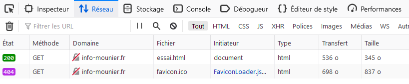

L’objectif de cette activité est de visualiser le contenu de certaines requêtes HTTP et de leur réponses HTTP.
Il est très facile de visualiser le dialogue client-serveur avec les Outils de développement Web des navigateurs. Nous allons présenter ceux du navigateur Firefox.
Lancez le navigateur Firefox puis lancez les Outils de développement Web avec la touche F12. Cliquez ensuite sur l’onglet Réseau pour pouvoir observer les requêtes que nous allons faire (ainsi que leur réponses).
1. Tapez dans la barre d’adresse (puis validez) l’URL suivante : http://info-mounier.fr/premiere_nsi/essai.html. Vous devriez obtenir une liste des toutes les requêtes effectuées comme sur la capture ci-dessous.

On peut directement remarquer que la méthode utilisée pour la requête est GET et que le statut de la requête est à 200 (colonne *État*), ce qui signifie que la requête a aboutit : le serveur a trouvé la ressource et l'a renvoyée.
2. Cliquez sur cette première requête pour observer les détails.
3. Déroulez les informations sur la requête GET (voir numéro 1 sur la capture d’écran) puis trouvez dans toutes les informations visibles :
Ces trois informations correspondent à ce que l’on appelle la ligne de commande de la requête (voir plus bas).
4. Cherchez également les informations suivantes :
5. Affichez le texte brut de la requête (voir numéro 2 sur la capture d’écran). Vous devriez obtenir un texte similaire à celui-ci :
GET /premiere_nsi/essai.html HTTP/1.1
Host: info-mounier.fr
User-Agent: Mozilla/5.0 (Windows NT 10.0; Win64; x64; rv:96.0) Gecko/20100101 Firefox/96.0
Accept: text/html,application/xhtml+xml,application/xml;q=0.9,image/avif,image/webp,*/*;q=0.8
Accept-Language: fr,fr-FR;q=0.8,en-US;q=0.5,en;q=0.3
Accept-Encoding: gzip, deflate
Connection: keep-alive
Upgrade-Insecure-Requests: 1
Pragma: no-cache
Cache-Control: no-cache
Analyse : Il s’agit de la requête envoyée au serveur et on y trouve toutes les informations nécessaires. En particulier, une requête possède toujours la syntaxe suivante :
6. Identifiez dans la requête de la question 5, la ligne de commande ainsi que les en-têtes de la requête.
On va désormais étudier la réponse du serveur.
7. Cherchez les informations suivantes dans les en-têtes de la réponse :
Ces trois informations correspondent à ce que l’on appelle la ligne de statut de la réponse (voir plus bas).
8. Cherchez sur la page https://developer.mozilla.org/fr/docs/Web/HTTP/Status, les différents codes de réponse que le serveur peut renvoyer. Que signifie le code 200 qui a été renvoyé pour la réponse étudiée à la question précédente ?
9. Cherchez également dans les en-têtes les informations suivantes :
10. Cliquez sur l’onglet Réponse (voir numéro 4 sur la capture d’écran) pour voir le corps de la réponse. Cliquez ensuite sur Brut pour afficher le texte brut correspondant au corps de la réponse : il s’agit du code HTML de la page Web renvoyée !
BILAN : Une réponse HTTP possède la syntaxe suivante :
/premiere_nsi/essai.html)Dans notre cas, la réponse du serveur est donc la suivante :
HTTP/1.1 200 OK
Content-Type: text/html
Transfer-Encoding: chunked
Connection: keep-alive
Keep-Alive: timeout=15
Date: Sun, 06 Feb 2022 10:59:26 GMT
Server: Apache
Last-Modified: Mon, 15 Mar 2021 15:16:52 GMT
ETag: W/"159-5bd94bd53f5fa"
Content-Encoding: gzip
<!DOCTYPE html>
<html lang="fr">
<head>
<meta charset="UTF-8" />
<title>Informatique au lycée Mounier ANGERS</title>
<meta name="viewport" content="width=device-width, initial-scale=1.0" />
</head>
<body>
<h1>Protocole HTTP</h1>
<p>Ceci est une page pour comprendre le protocole <b>HTTP</b></p>
</body>
</html>
11. Dans cette réponse, identifiez la ligne de statut, les en-têtes et le corps.
12. Tapez dans la barre d’adresse l’URL https://info-mounier.fr/premiere_nsi/essai.html (on utilise le protocole HTTPS) et vérifiez que le port utilisé n’est plus 80 mais 443 (voir numéro 1 sur la capture d’écran).
Le port 80 est utilisé par le protocole HTTP, le port 443 par le protocole HTTPS.
13. Tapez dans la barre d’adresse l’URL http://info-mounier.fr/foot.html. Quel est le code réponse et que signifie-t-il ? (revoir https://developer.mozilla.org/fr/docs/Web/HTTP/Status si besoin).
14. Effacez toutes les requêtes des outils de dévéloppement. Tapez ensuite dans la barre d’adresse l’URL https://info-mounier.fr/index.php et observez les requêtes/réponses échangées entre le navigateur et le serveur.
Références :
Germain BECKER & Sébastien POINT, Lycée Emmanuel Mounier, ANGERS